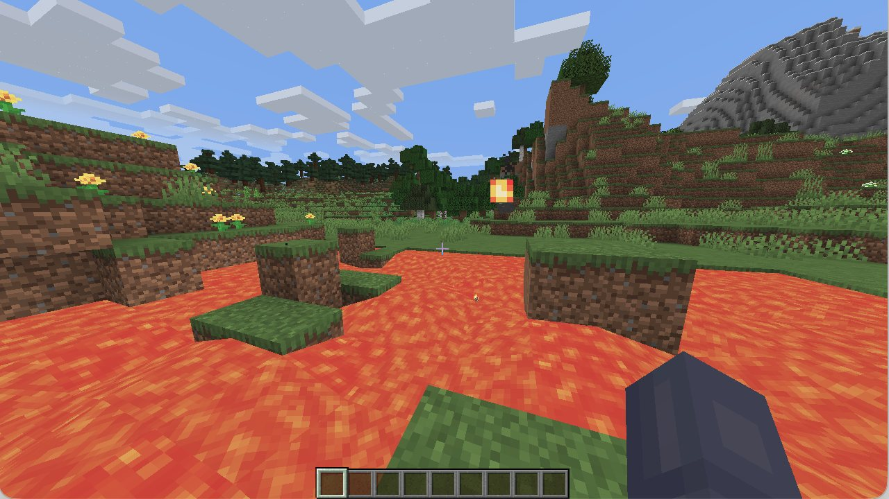

A full MakeWaterfall episode
Green flashes mark where the plan re-syncs to the real observation.
Mirror solves embodied tasks without expert action labels or task rewards through repeated self-play with a large-scale video planner.
Abstract
Video generative models are an emerging tool for embodied agents: they can serve as scalable visual planners, generating videos that depict how to complete previously unseen tasks. However, executing these plans typically requires a video-to-action or “inverse dynamics” model trained on large, human-collected video-action datasets, severely limiting scalability. We introduce Mirror, a self-supervised approach that learns video-to-action mappings through environment interactions, without prior action data or hand-crafted rewards. Mirror learns by attempting to follow a visual plan by executing its best guess of the underlying actions in the environment. Mirror then trains on the resulting video-action pairs, incrementally self-improving and following the visual planner more closely. Across Atari, OGBench, and DeepMind Control, Mirror outperforms leading learning-from-observation methods with learned video plans, and achieves near-expert performance with oracle plans. On Minecraft BASALT, it outperforms methods with access to expert actions or hand-engineered task knowledge. In Minecraft survival, it is the first method to acquire an iron pickaxe through self-improvement alone, without rewards or expert action labels. In the offline setting, with expert action labels but no environment interaction, it sets a new state of the art in obtaining diamonds. Our results suggest that advances in video models can translate into increasingly capable agents without a corresponding need for hand-crafted rewards or large collections of expert action data.
The idea
Video models are scalable task planners, but executing a plan requires a video-to-action (V2A) model, which prior work trains on expensive paired video–action data. Mirror learns this model from its own repeated attempts to follow the video plan.
Why it works
Random exploration rarely reaches the critical transitions in a task, like crafting a pickaxe in Minecraft. Following a video plan keeps Mirror’s rollouts at the frontier of what the V2A model can currently do, so with each round of training it can follow more of the plan.
Closed-loop replanning
The video planner generates a plan, and the agent executes a short chunk of actions to follow it. We add noise to these actions so the agent can discover new behaviors.
Exploration noise and errors in the V2A model both push the agent away from the planned path.
After every chunk of actions, the video planner generates a new plan from the observation the agent actually reached, so errors don’t accumulate.
Since the V2A model hasn’t learned this transition yet, the first few attempts fail. Every attempt plays out a little differently, so together they give good coverage of the states around the milestone.
When an attempt includes the right action, the agent gets past the milestone. The transition goes into the replay buffer, and the V2A model learns it.
Because the planner replans after every chunk, no plan has to be physically accurate over a long horizon.
Minecraft
Mining a diamond in Minecraft is a long-horizon task. Starting from nothing, the agent first has to collect wood, craft tools, and smelt iron, passing twelve milestones along the way. The baselines learn from human action labels or from rewards, while Mirror learns only from self-play with a video planner.
Survival mode
MineRL BASALT
BASALT tasks have fuzzy, hard-to-verify goals, like making a beautiful waterfall and then taking an aesthetic picture of it. Mirror finetunes its video planner on human demonstrations of each task and trains its V2A model from scratch with only five hours of self-play.
Generalization
We test the agent in two worlds it has never seen, giving it each task only as a text prompt such as “Chop tree” or “Dig ground.” Without any expert demonstrations or task-specific finetuning, Mirror’s self-improving V2A model is competitive with a V2A model supervised on expert actions.
In-context learning
We place the agent in a lava lake without any finetuning. Each time it falls in, it respawns where it started and tries again.
When the video context is kept between lives, the trajectories share a clear directional bias, showing that past attempts shape where the agent goes next.
When the history is reset after every death, the agent moves in roughly uniform directions around the spawn point.
By learning from its failures in context, Mirror reaches a cumulative escape rate of 76% over 30 lives, compared with 46% when the history is reset.
Keeping VPT BC’s recurrent state between lives gives no comparable benefit, and may even lower its escape rate.
Shared history
Independent lives
Ours
VPT BC

Beyond Minecraft
We also evaluate Mirror on 24 tasks from DeepMind Control, OGBench, and Atari, where every method learns from expert videos without actions or rewards. We run Mirror with both a generative video planner and an oracle planner that supplies frames from an RL expert.
As video planners improve, Mirror can turn their plans into actions without any expert action data or hand-crafted rewards.
Green flashes mark where the plan re-syncs to the real observation.
FindCave episodes after 0, 15, and 30 minutes of self-play, from random actions to the first success.
Mirror after 1M environment steps.
Mirror after 1M environment steps.
The agent keeps its past lives in the video planner’s context and eventually escapes the lava.
Mirror after 1M environment steps.
Mirror after 1M environment steps.
An unsuccessful MakeWaterfall episode.
BibTeX
@article{ryu2026mirror,
title={Self-Improving Video-to-Action Models},
author={Ryu, Hyunwoo and
Chen, Eric Ming and
Wilcoxson, Max and
Sitzmann, Vincent},
year={2026},
}